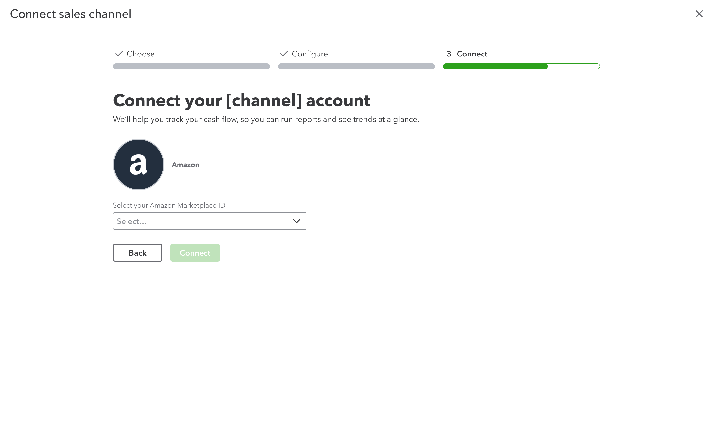

2022 ✴ UX/UI design, User research and testing
Designing a scalable setup and onboarding process for QuickBooks Commerce
01 Background
QuickBooks is an accounting software that has historically underserved product-based businesses. A new offering called ‘Commerce’ aims to bridge this gap through improved inventory management features.
Based on data and customer feedback, we observed low engagement among early users of Commerce, who feel lost due to
- lack of guidance, and
- disjointed information architecture
With the introduction of new features for Commerce, we had an opportunity to work on the first issue, and guide users from account setup to experiencing the benefits of Commerce.
02 My role
The team composed of a product manager, tech lead, another product designer, content designer, and three software engineers. My responsibilities include:
- User research and testing: Leading user interviews and synthesizing the results.
- Design delivery: From creating wireframes, prototypes, annotated mockups, to participating in multiple bug bashes and QA rounds with the team.
- Prioritization: Helped in identifying priorities and organizing them into milestones.
- Education: Worked with customer success and content teams to create support articles and how-to videos.
03 Work
Connecting a channel
The first step a user takes to start using Commerce is to connect a sales channel. We had to balance getting the essential information to setup while not overwhelming users.

Introducing the new inventory feature
Due to the inherent complexities of inventory management and our own limitations for beta, we had to find a way to simplify this for users.
We ran multiple rounds of moderated and unmoderated user tests to find what works, resulting in an animated diagram that shows how data syncs between QuickBooks and the sales channels. I illustrated and animated this diagram using Adobe Illustrator, After Effects, and Lottiefiles.
After connecting a channel
After successfully connecting a sales channel comes another critical point. We’ve seen users drop off at this point as we had little by way of guiding them on what to do next.
To provide more guidance and context here, we implemented:
- Setup checklist: As a short-term solution to the disjointed IA, the checklist guides users throughout various relevant areas of QuickBooks.
- Channel connections: One challenge is that certain features are accessible only after data import, which can take from a few minutes to a few hours. To manage our user’s expectations, we now show accurate import status, aiming to include more details in the future such as remaining time.
- Tasks: This serves as an evergreen way of surfacing to users what they need to do.
All the components are reused from our design system, reducing dev effort.
Designing for scale
We established a framework to organize and sequence steps because various teams will inevitably be involved in shaping the setup and onboarding process down the line.
04 Result
- Achieved a 6% improvement in completion rates, with a 20% rise in users choosing to import data as far back as possible, enhancing their overall experience and benefits.
- Enhanced retention and engagement rates among users who successfully completed the new setup and onboarding process.
- The highly requested inventory sync feature has gained significant traction, with over half of users opting in within two weeks of its launch.